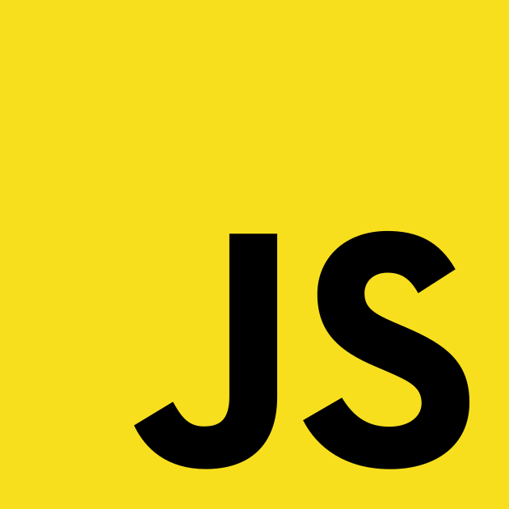
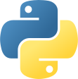
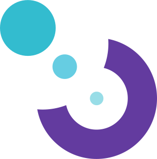
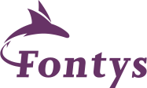

I’m a freelance software developer from the Netherlands who loves working on open source software. One of my core values is people should always be allowed to be themselves. Rather than focusing on hacky workarounds, I like to focus on proper solutions. Lately I have been interested in development tooling. If you’re interested to see what I’m currently working on, please visit my GitHub profile.
 JavaScript
I mainly focus on JavaScript, and yes, this includes Node.js, TypeScript, JSX, and React. Below are some of the highlights, but it’s not everything I’ve worked on. To see more of my projects and contributions, please visit my GitHub and GitLab profiles.
unified
I’m part of the unified collective. The unified collective is an ecosystem of tools and plugins for working with ASTs. This can be used for transforming and validating code. For example, it can be used to transform markdown to HTML, or for spell checking.
Language server
The language server protocol allows editors to provide smart language features. Monaco editor is a code editor for the browser. It is the same editor that’s used in Visual Studio Code. I worked on some projects which involve these concepts.
 Python
When I first started working on open source software, I was mainly using Python. Although I mainly use JavaScript nowadays, I still do like Python. Unfortunately most of my Python code is closed source. My first ever project was a GTK2 based minesweeper game. My first open source project was wakeonlan for Python.
Linux
I am a Linux user and enthousiast. I first started using Ubuntu Linux in 2008 and I’ve loved using it ever since. I love that it’s free, open source, customizable and dark mode was supported far before it became mainstream. Using Linux is also what sparked my interest in programming.
As I started becoming more invested in software and open source, I also started appreciating the terminal. Right now I can’t imagine working without a terminal and proper tab completion.
Later my Linux experience also helped me truly undestand Docker and Kubernetes.
Jobs & Education
Motif
Currently I work as a freelance developer for Motif. Motif is a web based editor which allows people to create beautiful websites while they can still focus on content. It leverages the latest web technologies such as MDX, React, ESM, and Tailwind CSS.
What I like about working at Motif is they want to invest in these open source technologies.
Appsemble –
Appsemble is a low-code app building platform. it allows users to define what an app looks like using a YAML file. An app contains blocks, which can also be custom built. This combination allows users to build apps with minimal technical skill, and allows them to extend the platform if they are willing to.
At Appsemble I was involved with the full stack. This ranges from typical front end React code and UX to the Node.js back end, database management, Kubernetes, and CI/CD.
The source code of Appsemble is open source and available on GitLab
 d-centralize –
My first job was at d-centralize. I started my internship here and stayed around afterwards. At d-centralize I worked on various projects, including Pro6PP, ITSLanguage, and inContract. Here I worked as a full stack developer using Python, Google Cloud, Flask, AngularJS, Cordova, and later Node.js and React.
Appsemble is also part of d-centralize. Eventually my focus within d-centralize shifted solely to Appsemble.
 Fontys –
At Fontys I followed the IT course with a focus on software engineering and a bit of ethical hacking. The study focuses a lot on object oriented programming in Java and C#.
Although I left the technology stack used at Fontys behind, it’s also the place where I learnt various other skills, such as working together in groups, using version control systems, and many of the programming basics.
Hobbies & Interests
I do love writing software, but that’s not all I do. For starters I love listening music! I listen to music almost all the time, mostly metal 🤘. It’s not all screaming over guitars. You should really check out Machinae Supremacy and Diablo Swing Orchestra.
Also I like playing games. This includes board games, but also table top role playing games such as Pathfinder and Starfinder. I also enjoy playing video games, but I don’t consider myself to be a hardcore gamer. I mostly play Minecraft and Nintendo games.